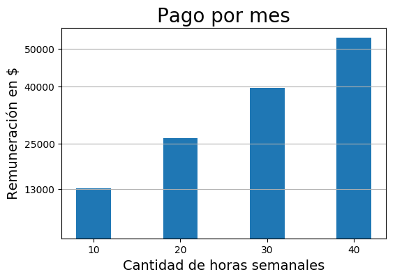
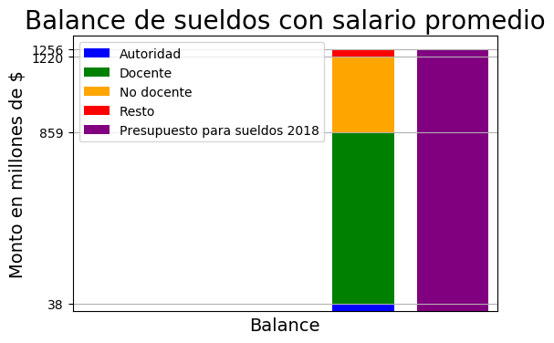

Mucho se dice sobre el presupuesto universitario de nuestra casa de estudios y la posibilidad de solventar los sueldos con él, de boca de funcionarios y personajes políticos. Intentamos comprobar en qué se basa "el conflicto", y si existe un problema real. Buscamos datos en fuentes oficiales sobre presupuesto universitario, el monto del mismo que se destina a sueldos, la cantidad de personas y su dedicación en horas semanales y calculamos un promedio aproximado de remuneración por mes del personal de la UNRC a modo de aproximación global. Intentamos contrastar la misma con una aproximación más precisa según las grillas salariales docentes y no docentes. A pesar de extraer toda la información oficial posible, y con tres diferentes análisis de los mismos, NO fue posible establecer una única y válida conclusión, lo que hace imposible de manera directa la posibilidad de formar una opinión personal, con base en datos reales y oficiales, y abstrayéndose de discurso político alguno.
¿CÓMO OBTUVIMOS LOS DATOS?
El sitio oficial de la UNRC no publica presupuesto para 2018, la última publicación al respecto data de 2016 (Presupuesto UNRC). Según informa Puntal, el monto de $1.478 millones para el presupuesto 2018
En declaraciones públicas de autoridades de la UNRC en el sitio oficial se puede apreciar: "Los gastos de funcionamiento, que insumen entre el 10 y el 15 por ciento del presupuesto de la UNRC (el resto es para sueldos) fueron otro de los tópicos."
Obtuvimos de Recursos humanos UNRC la cantidad de personal clasificados según categoría y horas semanales.
Confeccionamos una aproximación global de remuneración mensual sin discriminar entre autoridad, docente o no-docente, pero si por cantidad de horas de dedicación del personal de la UNRC.
Aunque difícil de encontrar, se sumaron al conjunto de datos las grillas salariales docentes y no docentes, en las que se discrimina por dedicación/categoría los años de antigüedad y otras particularidades de cada cargo para establecer la remuneración total. Si bien contamos con la cantidad de personas en las categorías docente, no-docente y autoridad, así como las cantidades por dedicación/categoría correspondientemente, no podemos discriminar la cantidad como lo hace la grilla salarial. Ante este faltante de información decidimos la aproximación más sencilla: asignar un sueldo promedio entre el sueldo más alto y el más bajo para cada dedicación/categoría y cada clasificación del personal de la UNRC.
Lo siguiente fueron cuentas simples: sumar el total de salario mensual suponiendo un promedio de remuneración según la cantidad de personas por categoría y por 12 meses, obtener el monto correspondiente al 85% del presupuesto 2018, y comparar estos dos. Y paralelo a ello, el mismo análisis suponiendo un máximo de remuneración para cada categoría.
¿CUÁL FUE EL RESULTADO?

APROXIMACIÓN GLOBAL
Calculando un promedio de pago por hora sin discriminar autoridades de docentes o de no docentes, ni sus antigüedades

APROXIMACIÓN CON GRILLA SALARIAL
Calculando un promedio entre el máximo de antigüedad y el mínimo

- Total autoridades: $ 38425176.0
- Total docentes: $ 820733598.0
- Total no docentes: $ 360699192.0
- Total sueldos: $ 1219857966.0
- Presupuesto sueldos 2018: $ 1256300000.0
- Resto: $ 36442034.0
Suponiendo que cada persona percibe el máximo de antigüedad

- Total autoridades: $ 49684308
- Total docentes: $ 1061224476
- Total no docentes: $ 371477796
- Total sueldos: $ 1482386580
- Presupuesto sueldos 2018: $ 1256300000.0
- Resto: $ -226086580.0
¿CÓMO INTERPRETAR LOS RESULTADOS?
He aquí la cuestión... Con base en todos los posibles datos oficiales a disposición, la estimación global, en la que no se discrimina autoridades de docentes ni de no docentes, sino que se agrupan por cantidad de horas dedicadas semanalmente, el promedio de salario resulta razonable y el más chico de ellos superior al mínimo vital y móvil vigente.
Agrupando al personal de la UNRC según el tipo de cargo que desarrolla, no pudimos agrupar a su vez, además de tipo de dedicación, antigüedad u otra particularidad que impacta directa y significativamente en su sueldo mensual, por lo que registramos resultados para un caso promedio y para el más favorable en el que se supone que todos cobran el máximo. Los resultados son totalmente opuestos y contradictorios. Para el primero se reporta un resto de 36 millones, mientras que para el segundo un faltante de 226 millones.
¿Y ENTÓNCES?
NO ES POSIBLE hacer un análisis objetivo con los datos públicos disponibles. Según las suposiciones elegidas, modificando el parámetro "libre" que no se encuentra publicado, los resultados oscilan entre: "El presupuesto destinado a sueldos es suficiente para remunerar a los trabajadores de la UNRC y se reporta un resto de 36 millones de pesos" y "El presupuesto destinado a sueldos no es suficiente para remunerar a los trabajadores de la UNRC, se necesitan 226 millones de pesos extra."
¿Alguno de los resultados reflejan los sueldos reales del personal de la UNRC?
¿Es confiable la información disponible?
¿Cómo formar una opinión propia a partir de un análisis objetivo?
No es descabellado pensar que como miembros de la comunidad universitaria o ciudadanos en general tengamos derecho a conocer, entre otras cosas, el presupuesto de la UNRC, el monto que se destina a sueldos, el sueldo promedio del personal, analizar "el conflicto" en cuestión y formar una opinión personal al respecto.
El Artículo 1° de la Ley de acceso a la información pública Nº 27.275 establece que toda la información en poder, custodia o bajo control del sujeto obligado debe ser accesible para todas las personas, (...), debe publicarse de forma completa, con el mayor nivel de desagregación posible y por la mayor cantidad de medios disponibles.
Sin embargo las fuentes de información que encontramos al alcance para los datos faltantes se limita a declaraciones y opiniones personales de funcionarios y personajes políticos.
Descargar detalles completos